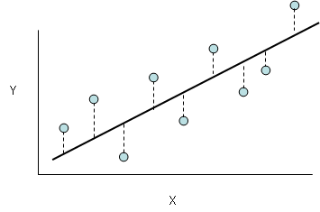

The Elements of Data Science: A Perspective from Applied Statistics and Machine Learning Bin Yu and Rebecca Barter
Linear models
Suppose that we were interested in predicting height using measurements of weight as a predictor. A simple way to do this might be to come up with an equation of the form $$\text{height} = a + b \times \text{weight}$$ for some constants $a$ and $b$. You might be revolted at such a gross oversimplification of the relationship between height and weight: surely we all know that measurements height and weight don't fall on a perfectly straight line; there are all sorts of deviations! If you took the time to take a random sample of people, measure their heights and weights, and then plotted the height measurements against the weight measurements, you'll notice that there certainly are deviations from the straight line, but that the overall trend is linear. Thus, perhaps our model above will be more accurate if we add a term that can represent these deviations:
$$\text{height} = a + b \times \text{weight} + \epsilon$$
where $\epsilon$ is some random number that, on average is zero, but varies randomly about zero. A representation such as this is what we call a simple linear model: linear models can be used to describe a continuous response variable in terms of a linear combination of one or more predictor variables plus some noise.
We can start to get fancy by adding other variables such as gender and age, and even perhaps some interaction terms, but we might be getting ahead of ourselves. There is an important question to ask first. What are the values of $a$ and $b$? The answer is, unfortunately, that we can never know. If this model is to be believed, these values exist for an overall population which is most likely so large that we can never measure the height and weight of every individual in the population. We can, however, observe a sample from this population, and we can use these sample individuals to estimate the values of $a$ and $b$.
To motivate some notation, suppose that we want to fit a linear model to a response $y$ and we have $p$ predictor variables, $x_1, x_2,..., x_p$ then we can write this linear model as
$$y_i = \beta_0 + \beta_1x_{1,i} + \beta_2 x_{2,i} + ... + \beta_px_{p,i} + \epsilon_i$$
where the subscript $i$ specifies that we are talking about the model for individual $i$ from our sample. Notice that every individual has the same values of $\beta_1$, ..., $\beta_p$ (since these don't depend on $i$), but different values for $y_i, x_{1, i}, x_{2, i}, ..., x_{p, i}, \epsilon_i$. To frame this in the setting of the example above, each individual has different weights, ages, genders, etc but the same linear relationship exists between height and these predictor variables for each individual.
Suppose that we have a sample of $n$ individuals from a population. We can write the above model in matrix form as follows
$$Y = X \beta + \epsilon$$
where
$$Y =\left[ \begin{array}{c}y_1\\ y_2 \\ \vdots\\ y_n\end{array} \right]$$
is a $n \times 1$ response vector for our $n$ individuals,
$$X =\left[ \begin{array}{cccc} x_{1, 1} & x_{1, 2} & \dots & x_{1, p}\\ x_{2, 1} & x_{2, 2} & \dots & x_{2, p}\\ \vdots & \vdots & \ddots & \vdots \\ x_{n, 1} & x_{n, 2} & \dots & x_{n, p} \end{array}\right]$$
is a $n \times p$ design matrix for our $n$ observations (the first row corresponds to the 4p$ variable measurements for individual 1, and so on),
$$\beta = \left[ \begin{array}{c}\beta_1\\ \beta_2 \\ \vdots\\ \beta_p\end{array} \right]$$
is our $p \times 1$ coefficient vector, and
$$\epsilon = \left[ \begin{array}{c}\epsilon_1\\ \epsilon_2 \\ \vdots\\ \epsilon_n\end{array} \right]$$
is our random $n \times 1$ error vector, whose entries specify the deviations of each individuals response from the specified linear form. We typically assume that $E(\epsilon | X) = 0$ and $Var(\epsilon | X) = \sigma^2 I$, but we do not necessarily need normality. As a result of these assumptions, we have that the expected response is given by
$$E(Y | X) = E(X \beta + \epsilon | X) = E(X \beta| X) + E(\epsilon | X) = X \beta$$
The model, $Y = X \beta + \epsilon$ is commonly referred to as a linear regression model. However, recall that both $\beta$ and $\epsilon$ are unknown! If we knew $\beta$, we could make predictions of the form $\hat{Y} = X\beta$. Thus, to make a linear regression model useful, we need to estimate the parameters, $\beta$. To recap, the primary assumptions underlying the linear regression model (beside from the obvious assumption of linearity) are
The errors $\epsilon_i$ are independent and identically distributed (iid) with mean 0 and variance $\sigma^2$.
If the $X$ are random, we assume that $\epsilon$ is independent of $X$.
Note that nowhere have we explicitly assumed a Gaussian distribution for the errors!
Fitting a linear model using OLS
How do we come up with an estimator $\hat{\beta}$ of the population coefficients $\beta$? In general, we want to find the value of $\hat{\beta}$ such that the predicted $Y$ values, $\hat{Y} = X \hat{\beta}$ are as close to the true values, $Y$, as possible. If we use the $L^2$ measure of "closeness", then we want to find the value of $\beta$ that minimizes the quadratic loss function:
$$\hat{\beta} = \underset{\beta}{\text{arg}~\text{min}} \| Y - X \beta\|_2^2 = \underset{\beta}{\text{arg}~\text{min}} \sum_{i = 1}^n (y_i - X_i \beta)^2$$
where $X_i = [x_{i,1}~ x_{i, 2} ~... ~x_{i, p}]$ is the $i$th row of the design matrix (the predictor vector for observation $i$). In the image below, this corresponds to finding the line such that the vertical distances between the observations and the line are minimized.

If our design matrix, $X$, is full rank, then the value of $\beta$ that minimizes the above expression can be written as $$\hat{\beta}_{OLS} = \left(X^TX\right)^{-1}X^T Y $$
and this is what we call the ordinary least squares (OLS) estimator (because it is the minimizer of the squared loss function). If you have never encountered this calculation before, we encourage you to try it yourself (we promise it's not too hard - just set the derivative to zero and solve for $\beta$!). Note that if $X$ is not full rank, it is possible to calculate a generalized inverse using singular value decomposition, however in this case, the solution (the minimizer) is not unique, as we will explore below.
If this is the first time you've seen linear regression, we encourage you to do some external research, because we will be assuming familiarity with general linear models from this point.
Sources of randomness
Let's ask a question: is $\hat{\beta}$ random? What about $\beta$? To answer this question, let's ask, where does the randomness in the model come from? We usually consider $X$ to be fixed (but this is not a requirement), and $\beta$ is a constant (but unobservable) population variable. The only source of randomness in the regression model $Y = X \beta + \epsilon$ is in the random error, $\epsilon$ ($Y$ is random only because it depends on $\epsilon$). Keep this in mind, because it is very important! So we ask again: is $\hat{\beta}$ random? Look again at the formula $\hat{\beta} = \left(X^TX\right)^{-1}X^T Y$. The $X$ matrices are fixed, but $Y$ is random (due to its dependency on $\epsilon$). Thus, the answer is: yes, $\hat{\beta}$ is random! In fact, if we were to draw another sample and re-estimate $\beta$ using the new $X^*$ and $Y^*$, then we would get a different value for our estimator $\hat{\beta}^* = \left(X^{*T}X^*\right)^{-1}X^{*T} Y^*$ despite the fact that both $\hat{\beta}$ and $\hat{\beta}^*$ estimates of $\beta$: they can both be considered as realizations of the same random variable, $\hat{\beta}$.
The hat matrix: generating predictions
In summary if we use OLS to estimate, $\beta$, the equation that we get (and thus the predictions from the linear model that we obtain) can be given by
$$\hat{Y} = X\hat{\beta}_{OLS} = X\left(X^TX\right)^{-1}X^TY = HY$$
where $H$ is called the hat matrix (a cute name that arose due to the fact that $H$ puts a "hat" on Y). To be more technical, the hat matrix, $H$, is a projection matrix onto the linear space spanned by the columns of $X$. Note that $X$ is a matrix, so try your hardest to resist the temptation to cancel the $X$'s in the above expression (we cannot rearrange matrices like we can scalars: $ X\left(X^TX\right)^{-1}X^T \neq \left(X^TX\right)^{-1}X^TX = I$).
Residuals
We can rearrange the above equation as
$$Y = X \hat{\beta}_{OLS} + e$$
where $e = Y - X \hat{\beta}_{OLS}$ are called the residuals. The $i$th residual, $e_i$, measures how far the predicted response $\hat{y}_i$ is from the true value, $y_i$. However, it is a common misconception that the formula presented above is the regression model. This merely represents a relationship that is always true: that the observed values are equal to the predicted values plus the residuals (the difference between the observed and predicted values). There is no description in the above formula of the sources of randomness assumed by the model. The linear regression model is the formula containing the explicit random error variable $\epsilon$, $Y = X \beta + \epsilon$.
So given that we have a fitted linear model, $\hat{Y} = X \hat{\beta}$, how can we figure out how well the model is fitting the data? It makes sense to look at how close the fitted/predicted values are to the true values: that is, it makes sense to look at the residuals. In fact, a common measure of adequacy of model fit is given by the residual sum of squares (RSS):
$$RSS = \sum_{i=1}^n (y_i - \hat{y}_i)^2 = \sum_{i=1}^n e_i^2$$
Properties of the OLS estimator $\hat{\beta}$
Note that OLS was just one approach (in particular, minimizing the squared, or $L^2$, loss: $\sum_{i=1}^n(Y_i - X_i \beta)^2$) to estimating the coefficient vector, $\beta$. There are a number of alternative approaches such as the least absolute difference (LAD) which minimizes the $L^1$-loss $\sum_{i=1}^n|Y_i - X_i \beta|$. However, there are a number of properties that the OLS approach possesses that makes it particularly attractive as an estimator. Namely, the OLS estimator is unbiased and has an asymptotic Gaussian distribution. We will explore these properties below.
Unbiasedness
It is not hard to show that the OLS estimator, $\hat{\beta}_{OLS}$, is unbiased. That is, on average, over random samples from our population, our estimate, $\hat{\beta}_{OLS}$, will be equal to the "true" population value, $\beta$:
\begin{aligned} E\left(\hat{\beta}_{OLS} \Big| X\right) &= E\left( (X^TX)^{-1}X^TY \Big| X \right)\\ & = (X^TX)^{-1}X^T E(Y | X)\\ & = (X^TX)^{-1}X^T X\beta\\ & = \beta \end{aligned}
Variance
Recall that the only source of randomness in the linear model is the random error, $\epsilon$. In particular, we assumed that the $\epsilon_i$ were iid with variance $\sigma^2$. This implies that the variance-covariance matrix of the vector $\epsilon = (\epsilon_1, ..., \epsilon_n)$ is given by $$Cov(\epsilon | X) = \sigma^2 I _{n \times n} = \left[ \begin{array}{cccc} \sigma^2 & 0 & \dots & 0\\ 0 & \sigma^2 & \dots & 0 \\ \vdots & \vdots & \ddots & \vdots \\ 0 & 0 & \dots & \sigma^2 \end{array} \right]$$ The variance-covariance matrix of the OLS estimator, $\hat{\beta}_{OLS}$, is given by:
\begin{aligned} Cov\left( \hat{\beta}_{OLS} \Big| X \right) & = Cov\left( (X^TX)^{-1}X^TY \Big| X \right)\\ & = (X^TX)^{-1}X^T ~Cov(Y | X)~ X(X^TX)^{-1}\\ & = (X^TX)^{-1}X^T ~Cov(X\beta + \epsilon | X)~ X(X^TX)^{-1}\\ & = (X^TX)^{-1}X^T ~Cov(\epsilon | X)~ X(X^TX)^{-1}\\ & = (X^TX)^{-1}X^T~\sigma^2 I_{n \times n}~X(X^TX)^{-1}\\ & = (X^TX)^{-1}\sigma^2 \end{aligned}
Example:
For a simple example, suppose that we have a simple linear model $y_i = \beta_0 + \beta x_i + \epsilon_i$, then $$X = [1 ~~~ x] = \left[ \begin{array}{cc} 1 & x_1\\ 1 & x_2 \\ \vdots & \vdots \\ 1 & x_n \end{array}\right]$$
which implies that $$(X^TX)^{-1} = \frac{1}{\sum_{i=1}^n x_i^2 - \left( \sum_{i=1}^n x_i\right)^2}\left[ \begin{array}{cc} \frac{1}{n} \sum_{i=1}^n x_i^2 & - \bar{x}\\ - \bar{x} & 1 \end{array} \right]$$
so our estimate is given by
$$\beta = (X^TX)^{-1}X^Ty = \left[\bar{y} - \frac{Cov(x, y)}{Var(x)} \bar{x}~,~~ \frac{Cov(x, y)}{Var(x)} \right].$$
From here, it is easy to calculate the variance of $\beta_0$ and $\beta_1$: $$Var(\beta_0) = \sigma^2\frac{\frac{1}{n} \sum_{i=1}^n x_i^2}{\sum_{i=1}^n x_i^2 - \left( \sum_{i=1}^n x_i\right)^2},$$
and
$$Var(\beta_1) = \sigma^2\frac{1}{\sum_{i=1}^n x_i^2 - \left( \sum_{i=1}^n x_i\right)^2}.$$
Asymptotic normality
Since the OLS estimate of $\beta$ corresponds to the maximum likelihood estimate, theoretical results tell us that when we have a large sample size, the distribution of our estimator, $\hat{\beta}$ should be approximately Gaussian. What should the mean and variance of this distribution be? We found the mean and variance of $\hat{\beta}$ above, so our distributional result is
$$\hat{\beta}_{OLS} \overset{n \rightarrow \infty}{\sim} N\left( \beta, \sigma^2 (X^TX)^{-1} \right)$$
In fact this asymptotic result follows from the central limit theorem (CLT) which tells us that if we have a sequence of iid random variables, $X_1, ..., X_n$, drawn from any distribution, and if $E(X_i) = \mu$ and $Var(X_i) = \sigma^2 < \infty$ for each $i$, then the distribution of the sample average, $\bar{X} = \frac{1}{n}\sum_{i=1}^n X_i$, tends to a normal distribution. More specifically, the result tells us that
$$ \bar{X} \overset{d}{\rightarrow} N\left(\mu, \frac{\sigma^2}{n}\right)$$
which is quite remarkable, given that our sample of $X_i$'s could have come from any distribution at all (we just need the samples to be iid)! Most existing proofs of this fact are fairly tedious and fail to lead to an improved sense of intuition. An outline of the more interesting and intuitive proofs are discussed in an enlightening blog post by Terence Tao.
Estimating $\sigma^2$
Note that the variance of $\hat{\beta}_{OLS} = \sigma^2 (X^TX)^{-1}$ depends on $\sigma^2$, the common variance of $\epsilon_i$. If we want to get an idea of how variable our estimate, $\hat{\beta}_{OLS}$ is, then it is important that we have some idea of what $\sigma^2$ is equal to. Unfortunately, we rarely do! Thus we need to estimate $\sigma^2$ somehow. As a first approach, perhaps we could estimate $\sigma^2$ by looking, not at the variance of $\epsilon_i$ (since these are unobserved), but rather at the variance of the resuls, $e_i$, which can be thought of as realizations of the error terms $\epsilon_i$ (in fact, they would be realizations of $\epsilon$ if the proposed linear model was the "truth"). Recall that
\begin{aligned} e &= Y - HY = (I - H)Y\\ & = (I- H)(X\beta + \epsilon)\\ & = (I - H) \epsilon \end{aligned}
Then perhaps, since $\sigma^2 = Var(\epsilon_i) = E(\epsilon_i^2) \approx \frac{\sum_{i=1}^n e_i^2}{n}$, a reasonable estimate might be
$$\hat{\sigma}^2 = \frac{\|e\|_2^2}{n} = \frac{\sum_{i=1}^n e_i^2}{n}$$
This estimator, though not far from what we are searching for, turns out to be biased:
\begin{aligned} E\left[ ||e||^2 \Big| X \right] & = E \left[ ||(I - H) \epsilon||^2 \Big | X\right]\\ & = E\left[ \epsilon^T (I - H) \epsilon \Big| X\right] && (I - H)^2 = I - H \text{ and } ||a||^2 = a^Ta\\ & = E \left[ tr(\epsilon^T(I - H) \epsilon )\Big| X \right] && tr(a) = a \text{ for }a \in \mathbb{R} \\ & = E\left[ tr((I - H) \epsilon \epsilon^T) \Big| X \right] && tr(AB) = tr(BA)\\ & = tr\left[ E\left((I - H) \epsilon \epsilon^T \Big| X \right)\right]\\ & = tr\left[(I - H) E\left(\epsilon \epsilon^T \Big| X \right)\right]\\ & = tr\left[(I - H) Cov( \epsilon) \right]\\ & = \sigma^2 tr(I - H)\\ & = \sigma^2 (n -p) &&\text{(trace of a proj. matrix is its rank)} \end{aligned}
Thus an unbiased estimate of $\sigma^2$ is given by
$$\hat{\sigma}^2 = \frac{\sum_{i=1}^ne_i^2}{n-p}$$
Using OLS for categorical data
As a side note, although it is uncommon to use OLS to generate a linear model for two-class (binary) problems (a more modern approach is to use logistic regression, which we will discuss later), it remains a perfectly reasonable thing to do. If we had three-class or other multi-class problems, however, OLS is no longer reasonable, primarily because the labeling of these categorical classes as the numbers $1, 2, 3, 4, ...$ implies that class $1$ is more similar to class $2$ than it is to class $4$ (simply because the numbers $1$ and $2$ are closer together than the numbers $1$ and $4$), which is, in most cases, monstrously incorrect! Thus, typically when we consider linear regression, we are assuming that our response variable, $Y$, is continuous.
Leverage
It is an unfortunate fact that OLS estimates of $\beta$ are extremely sensitive to outliers in the data. How does one measure the "outlierness" of a given data point? One common approach (outside of the imprecise art of eyeballing) is to use a quantity called leverage, an extremely useful concept from regression diagnostics and robust statistics. It turns out that for observation $i$, the $i$th diagonal element of the hat matrix, $H$, is its leverage score, $h_i$. That is, $$h_i = H_{ii}$$
Interestingly, leverage doesn't measure "outlierness" in terms of the response, $Y$, it only measures extreme values in terms of our predictor space. To see this, recall that $H = X\left(X^TX\right)^{-1}X^T$.
Least squares when $X$ is not full rank
To obtain the estimate $\hat{\beta} = \left(X^TX\right)^{-1}X^T Y$, we needed to be able to invert the matrix $X^TX$. When $X$ is not full-rank (as is the case when we have more predictor variables than observations; a very common phenomenon in the modern world), this is not possible. Fortunately, however, it is still possible to generate a solution to the least squares problem (i.e. to obtain an estimate of $\beta$), although such a solution is no longer unique.
In the non-full-rank case, to obtain an estimate of $\beta$, instead of attempting to calculate the uncalculatable inverse of $X^TX$, we instead calculate the pseudo-inverse of $X^TX$ using Singular Value Decomposition (SVD).
Let's begin with a useful definition:
- A square matrix, $U$, is unitary if and only if $U^{-1} = U^T$.
SVD tells us that we can decompose a matrix, $X$ into the following form
$$X = U S V^T$$
where
$U$ is a unitary $n \times n$ left-eigenvector matrix whose columns correspond to the eigenvectors of $XX^T$,
$S$ is a diagonal $n \times p$ matrix whose non-zero eigenvalues are the square-root of the eigenvalues of $XX^T$ or $X^TX$, and
$V$ is a unitary $p \times p$ right-eigenvector matrix whose columns correspond to the eigenvectors of $X^TX$.
The pseudo-inverse of $X$ is then given by
$$X^{-} = V \cdot 1/S \cdot U^T$$
where $1/S$ is the diagonal matrix whose diagonal entries are the reciprocal of the non-zero elements of $S$ (the zero-entries are set to zero).
In the case of OLS, we can use $\left(X^TX\right)^{-}$ in place of the traditional inverse $\left(X^TX\right)^{-1}$ to find a particular (but non-unique) solution to the LS problem. The resultant fitted value is the projection of $Y$ onto the space spanned by the columns of $X$ and it is unique.
Using regression in Causal Inference
Recall our discussion on causal inference. In this section, we introduced the Neyman-Rubin model of potential outcomes where we have two possible outcomes: the outcome if subject $i$ is assigned to treatment, $Y_{i1}$, and the outcome if subject $i$ is assigned to control $Y_{i0}$. For any given subject, we can only observe one of these two outcomes, and we can write the response that we do observe as $$Y_i = ( 1- T_i) Y_{i0} + T_i Y_{i1}$$
where $T_i$ is the treatment indicator (and is a random variable) whereby $T_i = 1$ is subject $i$ is assigned to treatment and $T_i = 0$ if subject $i$ is assigned to control. We are interested in estimating the causal effect: $$\frac{1}{N}\sum_{i=1}^N (Y_{i1} - Y_{i0})$$ which is an unobservable quantity that we typically estimate by the observed average outcome difference between the treatment and control groups: $$\tau = \frac{1}{n_1} \sum_{i : T_i = 1} Y_i - \frac{1}{n_0} \sum_{i : T_i = 0} Y_i$$
It turns out that we can very naturally relate causal effect and linear regression. Suppose that we fit a linear model to the outcome using treatment assignment as the sole predictor:
$$Y_i = \beta_0 + \beta_1 T_i + \epsilon_i$$
Then $\beta$ can be thought of as the treatment effect on the outcome, and we can estimate it using OLS as described above. It can be shown that this estimate of the treatment effect is more or less equivalent to the simple estimator of the sample average treatment effect (SATE) of the form:
$$\tau = \frac{1}{n_1} \sum_{i : T_i = 1} Y_i - \frac{1}{n_0} \sum_{i : T_i = 0} Y_i$$
It is common to "adjust for covariates" by adding them into the regression equation
$$Y_i = \beta_0 + \beta_1 T_i + \beta_2 x_i + \epsilon_i$$
however, the only reason we should ever even be tempted to do this is if we believe that the covariate, $x$, is imbalanced between treatment and control in some way. This approach involving estimating the causal effect of the treatment by estimating $\beta_1$ using regression in which we adjust for covariates seems simple, and at first glance, very reasonable; in fact, this is the reason that this approach is so widely used (and misused!). There are however a huge number of critiques of this approach, primarily in the case of observational studies. One of the main issues is the assumption of linearity. If this assumption is unjustified, then our OLS estimates will be significantly worse than the simple difference in means SATE estimates! Moreover, if we adjust for covariates in our linear model, it is often the case that we will introduce extra bias into our estimate of treatment effect! For example, Berk et al. (2010) claim that "Random assignment does not justify any form of regression with covariates. If regression adjustments are introduced nevertheless, there is likely to be bias in any estimates of treatment effects and badly biased standard errors". There are examples of adjustments for which this disparaging view of using regression to adjust for covariates is not justified (see, for an example, Lin (2010)), but these models should still be used with caution.
In general, the only reason we would want to use regression to estimate our causal effect is to adjust for covariates; if we did not feel that any of our covariates differed between the treatment and control group, then we might as well simply calculate the more general SATE estimator, $\tau$. If, however, we did feel concerned about covariate imbalance, then perhaps this adjusted regression is justified, however, there are a number of other approaches to consider: notable we might perform matching which involves comparing subjects in the treatment to comparable subjects in the control group (where two subjects are comparable if they have similar covariate measurements).
Regression towards the mean (the regression fallacy)
Consider students in a class where the assessment includes a midterm in the middle of the semester and a final exam at the end of the semester. If we look at the students who do really well in the midterm and then examine their final exam grade. With a very high probability, although these students will still do very well in the final exam, they will do worse in the final exam than in the midterm. Similarly, if we look at the students who did not do well in the midterm, then there is a very high chance that they will do better in the final exam than they did in the final exam.
We can propose many plausible mechanisms for why this may happen: for example, the students who did very well in the midterm felt that they could relax and didn't study as hard for the final exam as they otherwise might have if they were disappointing with their grade. Similarly, the students who performed poorly in the midterm were worried about their grade and studied very hard for the final exam with the end result that they did better on the final exam than they did on the midterm.

For example, we tend to experience "football shaped" scatterplots, such as that presented above. We see that all of the points are clustered around the mean (the blue regression line), but the observations which are extreme in both axes tend to be closer to the regression line.
It is important not to confuse a difference in the test scores with regression to the mean.
Regularization
Lasso
The Least Absolute Shrinkage and Selection Operator (LASSO) was introduced by Robert Tibshirani in 1996